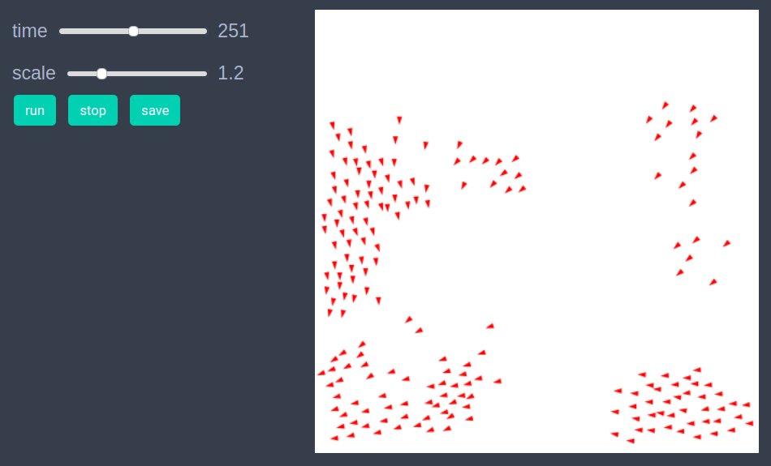
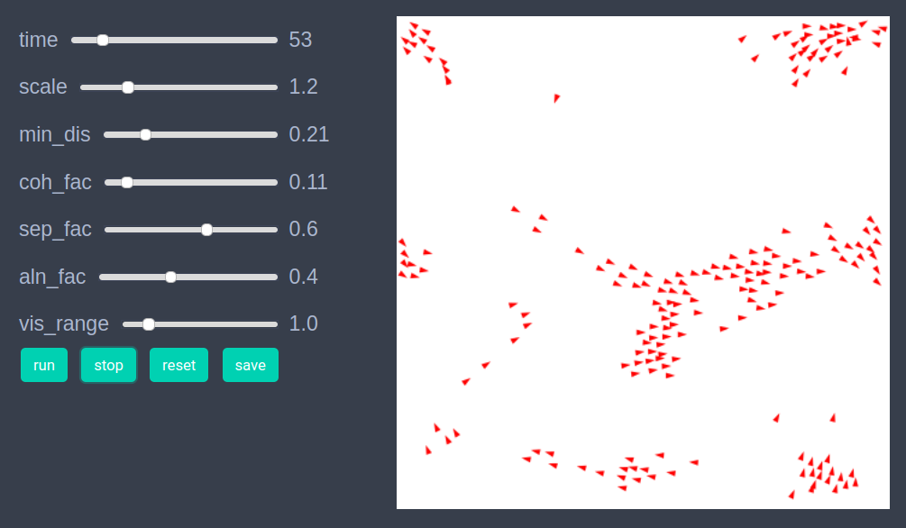

Flocking
using EasyABMStep 1: Create Agents and Model
Lets create 200 agents with properties shape, pos, vel and orientation (The orientation property is used internally by EasyABM to draw the direction agent is facing). The position pos is only accepted as a Vect which is an inbuilt vector type in EasyABM. It is also recommended for both convenience as well as performance to use Vect type for any vectorial properties in the model such as velocity and forces. The keeps_record_of argument is set of properties that the agent will record during time evolution. The model is defined with properties:
min_dis: The distance between boids below which they start repelling each other.coh_fac: The proportionality constant for the cohere force.sep_fac: The proportionality constant for the separation force.aln_fac: The proportionality constant for the alignment force.vis_range: The visual range of boids.dt: The proportionality constant between change in position and velocity.
The argument agents_type is set to Static which means that the agents number will remain fixed during simulation.
boids = con_2d_agents(200, shape = :arrow, pos = Vect(0.0,0.0),
vel=Vect(0.0,0.0), orientation = 0.0, keeps_record_of = Set([:pos, :vel, :orientation]))
model = create_2d_model(boids,
agents_type=Static, space_type = Periodic,
min_dis = 0.3, coh_fac = 0.05,
sep_fac = 0.5, dt= 0.1, vis_range = 2.0, aln_fac = 0.35)Step 2: Initialise the model
In this step we set the positions, velocities and orientations of boids and initialise the model.
function initialiser!(model)
xdim, ydim = model.size
for boid in model.agents
boid.pos = Vect(rand()*xdim, rand()*ydim)
boid.orientation = rand()*2*3.14
boid.vel = Vect(-sin(boid.orientation), cos(boid.orientation))
end
end
init_model!(model, initialiser = initialiser!)Step 3: Defining the step_rule! and running the model
In this step we implement the step logic of the flocking model in the step_rule! function and run the model for 500 steps.
const ep = 0.00001
function step_rule!(model)
dt = model.properties.dt
for boid in model.agents
nbrs = neighbors(boid, model, model.properties.vis_range)
coh_force = Vect(0.0,0.0) # For a Vect all coordinates must be of same type
sep_force = Vect(0.0,0.0)
aln_force = Vect(0.0,0.0)
num = 0
for nbr in nbrs
num+=1
vec = nbr.pos - boid.pos
coh_force += vec
if veclength(vec)< model.properties.min_dis
sep_force -= vec
end
aln_force += nbr.vel
end
aln_force = num>0 ? (aln_force / num - boid.vel) * model.properties.aln_fac : aln_force
num = max(1, num)
coh_force *= (model.properties.coh_fac / num)
sep_force *= model.properties.sep_fac
boid.vel += (coh_force + sep_force) + aln_force
boid.vel /= (veclength(boid.vel)+ep)
boid.orientation = calculate_direction(boid.vel)
boid.pos += boid.vel*dt
end
end
run_model!(model, steps=500, step_rule = step_rule!)Step 4: Visualisation
In order to draw the model at a specific frame, say 4th, one can use draw_frame(model, frame = 4 ). If one wants to see the animation of the model run, it can be done as
animate_sim(model)
After defining the step_rule! function we can also choose to create an interactive application (which currently works in Jupyter with WebIO installation) as follows. It is recommended to define a fresh model and not initialise it with init_model! or run with run_model! before creating interactive app.
boids = con_2d_agents(200, shape = :arrow, pos = Vect(0.0,0.0),
vel=Vect(0.0,0.0), orientation = 0.0, keeps_record_of = Set([:pos, :vel, :orientation]))
model = create_2d_model(boids,
agents_type=Static, space_type = Periodic,
min_dis = 0.3, coh_fac = 0.05,
sep_fac = 0.5, dt= 0.1, vis_range = 2.0, aln_fac = 0.35)
create_interactive_app(model, initialiser= initialiser!,
step_rule= step_rule!,
model_controls=[(:min_dis, "slider", 0.01:0.1:1.0),
(:coh_fac, "slider", 0.01:0.01:1.0),
(:sep_fac, "slider", 0.01:0.01:1.0),
(:aln_fac, "slider", 0.01:0.01:1.0),
(:vis_range, "slider", 0.5:0.5:4.0)], frames=400) 
Step 5: Fetch Data
It is easy to fetch any data recorded during simulation. For example, the data of average velocity of agents at each time step can be obtained as -
df = get_agents_avg_props(model, agent -> agent.vel, labels = ["average velocity"])Individual agent data recorded during model run can be obtained as
df = get_agent_data(model.agents[1], model).recordReferences
- https://en.wikipedia.org/wiki/Flocking